50 tons · Inner Sphere · 25 variants · 2801 to 3121

The most famous Centurion in fiction started out as nothing special. Just a beat-up secondhand CN9-A, bought on Solaris VII by an exiled noble with no money of his own and everything to prove.
That's Yen-Lo-Wang, and I'll get to it properly further down. First, the chassis it came from. Corean Enterprises built the Centurion in 2801 to complement their Trebuchet, a fire support 'Mech that needed something to stand in front of it. The Centurion ended up eclipsing the machine it was built to support.
What you've got. A Luxor D-Series AC/10 in the right arm, an LRM 10 in the left torso for reach, two medium lasers, one of them rear-facing, for anything that closes the distance. Ten tons of armour and 10 heat sinks. It's not fast, walk four with no jump jets on the original, but it hits at every range band and it keeps hitting after most mediums its age have run dry.
Here's the thing almost nobody explains properly. That autocannon's loading system is notorious for jamming, and it's custom-fitted to this one chassis rather than built from off-the-shelf parts. When it breaks in the field and the specific part isn't in the bay, the fix isn't repair. It's pulling the whole gun out and bolting on something else. That's not a one-off story, it's the actual reason this chassis has carried an AC/20, a pair of PPCs, a Gauss rifle, a rotary autocannon, a plasma rifle and a light Gauss rifle across its history. Every one of those is somebody's answer to a Luxor that finally gave up.
If you're choosing one: the CN9-A is still the honest original, the CN9-D is the modern standard once an LB 10-X and an XL engine are available, and the CN9-YLW is worth fielding for the name alone.
Everything on the CN9-A points at one job: stay in the fight at whatever range the enemy picks. The AC/10 and LRM 10 overlap enough that there's rarely a gap, and the two medium lasers, one of them facing backward, mean getting behind a Centurion isn't the free kill it is on most mediums.
The catch is the autocannon itself. A Luxor D-Series AC/10, fed from a two-ton magazine in the right torso, and per Sarna's own account, its loading system is "notorious for its defects." Because the whole assembly is custom-fitted rather than a standard part, a tech without the exact spare on hand often can't repair it at all. The standard fix, documented across the variant list, is to strip the mount and put something else in its place. That's not a flaw the factory ever fixed. It's the reason there's a CN9-AH with an AC/20 crammed into the same space, a CN9-Ar running twin PPCs because Jihad-era factories couldn't get autocannon parts at all, and a dozen more in between.
Heat is a minor concern next to that. A full alpha on the CN9-A runs 14 against 10 sinks, 4 over each turn it fires everything at once, which is manageable if you're not doing it constantly.
In 3027, Justin Xiang Allard was exiled from House Liao and broke, fighting on Solaris VII to survive on money borrowed from Kym Sorenson. He bought an old, ordinary CN9-A. Pulled the LRM 10 for a bigger autocannon, an AC/20, and won his first match on the surprise of it. He fixed titanium nails to the hand actuators later, a detail the rules could only represent as a hatchet, and used them once when the autocannon jammed mid-fight against Billy Wolfson.
The machine passed to his son, Kai Allard-Liao, who rebuilt it during the Clan Invasion: the AC/20 became a Gauss rifle, three medium pulse lasers went in, triple-strength myomer too. It went missing in action against Clan Jade Falcon on Alyina. Kai got it back anyway. After his death, it passed again, to Danai Liao-Centrella, rebuilt a third time with a Gauss rifle, an LRM 20, and endo steel construction.
Three pilots, three generations of the same family, one name carried through all of it. Named for a Chinese god of death, which is exactly the kind of thing you name a 'Mech that keeps outliving the people who own it.
The Centurion earned its keep early. Born into the First Succession War, it became close to the Federated Suns' unofficial house medium, and its slow, steady advances backed by that intimidating autocannon gave AFFS pilots a reputation for grinding fights rather than winning them fast.
By the early 3000s, Corean was in real trouble. The autocannon's chronic reliability problems had followed the design for two centuries, and losing the Centurion contract would have hurt badly. Corean's answer was to build an entirely new production facility on New Avalon in 3012 and move its whole headquarters there, spending heavily to fix what could be fixed. It worked well enough that the New Avalon Institute of Science took notice, and in 3022 NAIS partnered with Corean to make the Centurion a testbed for new technology outright. The line survived, and when the Federated Suns and Lyran Commonwealth merged, the AFFC inherited it as a going concern.
Demand kept growing. Corean licensed Jalastar Aerospace on Panpour to build the original CN9-A in 3047, and unveiled the modernised CN9-D two years later. The Clan Invasion pushed variants further still, and each new generation cycled the previous one out to mercenary units, which is how the design ended up scattered across the Periphery and even into Marian Hegemony service.
It didn't survive the Federated Commonwealth Civil War as a first-line design. Newer chassis pushed it out through the 3060s, and by the time of the HPG Blackout the original CN9-A was gone from front-line service entirely, though the line kept producing new variants well past that point.
Every verdict below is against other Centurions available in the same era. One variant, the CN9-D3D, fails the Trap test to the CN10-W, which does the same sniping job for less.
Nothing in its era does the chassis's job better for the money.
Does the job competently. Another variant does it better or cheaper, but there is no reason to avoid this one.
Only earns its Battle Value if you specifically need what it carries. C3, stealth, a command console, flak, jump jets.
Another variant in the same era, at no more than 3 percent above its Battle Value, matches or beats it on every Alpha Strike damage band, on armour, on structure, and carries every special ability it has. Nothing gained, something lost, no dearer.
Only the Trap tier is calculated. It is worked out from the variant data rather than decided by me, which means it is falsifiable: to argue with it you only have to name something the cheaper machine gives up. The other three are my opinion and you should treat them that way. 1 of the 25 Centurion variants fail the Trap test. The full rating scale is here, including what it deliberately does not measure.
All 25 are in the table further down. These are the ones that change how the machine plays, or that carry a name worth knowing.
50 tons · BV 945 · PV 28 · Brawler · 2801
Walk 4 / Run 6 / Jump 0 · 10 Single · 200 Fusion Engine
1x AC/10, 1x LRM 10, 2x Medium Laser
The original, 2801. Luxor AC/10 in the right arm, an LRM 10 for reach, two medium lasers for anything that gets close. 10 heat sinks and ten tons of armour. Slow for a medium, walk four with no jump jets, but it hits at every range and it'll still be standing when the fight's done. The one everybody means.
50 tons · BV 1130 · PV 28 · Skirmisher · 3049
Walk 6 / Run 9 / Jump 0 · 10 Single · 300 XL Engine
1x LB 10-X AC, 1x LRM 10, 2x Medium Laser
The 3049 modernisation: an LB 10-X in place of the old Luxor, an XL engine for walk six, run nine. Properly quick for the first time in this chassis' life, and the LB 10-X can switch between slug and cluster rounds, which the original autocannon never could.
50 tons · BV 957 · PV 27 · Juggernaut · 3027
Walk 4 / Run 6 / Jump 0 · 10 Single · 200 Fusion Engine
1x AC/20, 2x Medium Laser
Justin Xiang Allard's own machine, and the one that made this chassis famous. Same AC/20 conversion as the AH, plus two medium lasers and, per the fluff, titanium nails on the hand actuators that the rules represent as a hatchet. Worth fielding for the name alone.
50 tons · BV 1415 · PV 28 · Brawler · 3051
Walk 4 / Run 6 / Jump 0 · 10 Single · 200 XL Engine
3x Medium Pulse Laser, 1x Gauss Rifle
Kai Allard-Liao's Clan-era rebuild: the AC/20 becomes a Gauss rifle, three medium pulse lasers replace the mediums, triple-strength myomer goes in. Went missing in action against Clan Jade Falcon on Alyina. Kai recovered it anyway.
50 tons · BV 1738 · PV 47 · Skirmisher · 3062
Walk 6 / Run 9 / Jump 0 · 10 IS Double · 300 XL Engine
1x Rotary AC/5, 2x ER Medium Laser
A rotary AC/5 and double heat sinks turn this into a genuine DPS machine: four short, four medium damage per Alpha Strike turn, more than any other Centurion on this list. Loud, and it means it.
55 tons · BV 1260 · PV 28 · Sniper · 3121
Walk 4 / Run 6 / Jump 0 · 10 IS Double · 220 Light Engine
1x LB 10-X AC, 1x LRM 10, 1x Light PPC, 1x ER Medium Laser
The newest variant here, 3121: an LB 10-X, an LRM 10, a light PPC and an ER medium laser, on a Light Engine that survives a side torso hit an XL never would. The old formula, finally on a chassis built to take a punch.
Piloting one. Use the range overlap. Open with the autocannon and LRM together, and don't be afraid to let something close in, the rear-facing medium laser means it doesn't cost you as much as it should. Watch your heat if you're running one of the later doubled-up variants, but on the original ten single sinks, firing everything every turn will catch up with you.
Fighting one. It's slow. Walk four on the original, nothing exotic even on most later builds, so out-manoeuvring it is realistic if your own 'Mech has the legs. Its rear medium laser means a flanking attack isn't free, but it is survivable, since a Centurion caught from behind still can't bring its heavy gun to bear in time.
What I see go wrong. People treat every Centurion like the original AC/10 build and get surprised when it's actually carrying a Gauss rifle or twin PPCs. Check the variant before you commit to a plan, because this chassis has changed its primary weapon more times than almost anything else on this site.
If you run solo games with our AI opponent, the Centurion splits across all four roles: 10 Brawlers, 8 Skirmishers, 5 Snipers and 2 Juggernauts out of 25 variants.
A good mid-tier lance filler precisely because it refuses to specialise in just one thing.
Damage figures are the Alpha Strike short, medium and long values. BV is Battle Value 2.0.
| Variant | Intro | BV | PV | Role | Weapons | S/M/L | Verdict |
|---|---|---|---|---|---|---|---|
| Early Succession War | |||||||
| CN9-A | 2801 | 945 | 28 | Brawler | 1x AC/10, 1x LRM 10, 2x Medium Laser | 2/3/1 | Worth it |
| CN9-AH | 2874 | 945 | 29 | Juggernaut | 1x AC/20, 1x LRM 10 | 3/3/1 | Situational |
| Late Succession War - LosTech | |||||||
| CN9-AL | 2915 | 1057 | 28 | Brawler | 1x Large Laser, 1x Small Laser, 1x LRM 10, 2x Medium Laser | 2/2/1 | Solid |
| Late Succession War - Renaissance | |||||||
| CN9-YLW 'Yen Lo Wang' | 3027 | 957 | 27 | Juggernaut | 1x AC/20, 2x Medium Laser | 3/3/0 | Worth it |
| Clan Invasion | |||||||
| CN9-D | 3049 | 1130 | 28 | Skirmisher | 1x LB 10-X AC, 1x LRM 10, 2x Medium Laser | 2/2/2 | Worth it |
| CN9-YLW2 'Yen Lo Wang' | 3051 | 1415 | 28 | Brawler | 3x Medium Pulse Laser, 1x Gauss Rifle | 3/3/2 | Worth it |
| CN9-D3 | 3052 | 1324 | 29 | Skirmisher | 1x LB 10-X AC, 1x LRM 10, 2x Medium Laser | 2/2/2 | Solid |
| CN10-B | 3057 | 1243 | 30 | Brawler | 1x LB 10-X AC, 1x LRM 10, 1x Medium Laser, 1x Medium Pulse Laser | 2/2/2 | Solid |
| CN10-J | 3057 | 1257 | 28 | Brawler | 1x LB 10-X AC, 1x LRM 10, 1x Medium Laser, 1x Medium Pulse Laser | 2/2/2 | Worth it |
| CN10-W | 3057 | 1112 | 29 | Sniper | 1x LB 10-X AC, 1x PPC, 1x LRM 10 | 2/3/3 | Worth it |
| CN9-D3D | 3060 | 1373 | 37 | Skirmisher | 1x Light Gauss Rifle, 1x LRM 10, 1x ER Medium Laser | 2/2/2 | Trapbeaten by CN10-W |
| Civil War | |||||||
| CN9-D5 | 3062 | 1738 | 47 | Skirmisher | 1x Rotary AC/5, 2x ER Medium Laser | 4/4/0 | Worth it |
| CN9-Da | 3065 | 1035 | 28 | Skirmisher | 1x AC/5, 1x LRM 10, 2x Medium Laser | 2/2/2 | Solid |
| CN9-D4D | 3066 | 1369 | 31 | Skirmisher | 1x Light Gauss Rifle, 1x LRM 15, 1x ER Medium Laser | 2/3/2 | Solid |
| Jihad | |||||||
| CN9-D9 | 3071 | 1638 | 31 | Skirmisher | 1x Plasma Rifle, 1x LRM 10, 2x ER Medium Laser | 2/3/1 | Worth it |
| CN9-Ar | 3072 | 1226 | 31 | Sniper | 1x Heavy PPC, 1x Light PPC, 1x LRM 10, 1x Medium Laser, 1x Medium Pulse Laser | 2/3/3 | Situational |
| CN9-H | 3077 | 848 | 20 | Brawler | 1x LB 10-X AC, 5x Rocket Launcher 10, 1x Medium Laser | 2/2/1 | Situational |
| Late Republic | |||||||
| CN9-YLW3 'Yen Lo Wang' | 3101 | 1815 | 33 | Brawler | 1x Gauss Rifle, 1x LRM 20, 1x ER Medium Laser | 4/4/3 | Worth it |
| CN11-O | 3111 | 1236 | 28 | Brawler | 1x LB 10-X AC, 1x LRM 10, 2x ER Medium Laser | 2/2/2 | Solid |
| CN11-OA | 3111 | 1398 | 35 | Brawler | 1x Rotary AC/5, 1x MML 9, 1x ER Medium Laser | 4/4/1 | Worth it |
| CN11-OB | 3111 | 1430 | 34 | Sniper | 1x Heavy PPC, 1x MML 7 | 3/3/3 | Worth it |
| CN11-OC | 3111 | 1628 | 35 | Skirmisher | 1x Plasma Rifle, 1x LRM 10, 2x ER Medium Laser | 2/3/1 | Situational |
| CN11-OD | 3111 | 1177 | 30 | Brawler | 1x ER Small Laser, 1x MML 9, 2x ER Medium Laser | 3/3/1 | Solid |
| CN11-OE | 3111 | 1515 | 37 | Sniper | 1x Gauss Rifle, 2x ER Medium Laser | 3/3/2 | Worth it |
| CN10-D | 3121 | 1260 | 28 | Sniper | 1x LB 10-X AC, 1x LRM 10, 1x Light PPC, 1x ER Medium Laser | 2/2/2 | Worth it |
Availability for the CN9-A by era, straight off the Master Unit List.
| Era | Available to |
|---|---|
| Early Succession War (2781 - 2900) | Inner Sphere General, Mercenary, Periphery General |
| Late Succession War - LosTech (2901 - 3019) | Inner Sphere General, Kell Hounds, Mercenary, Periphery General, Wolf's Dragoons |
| Late Succession War - Renaissance (3020 - 3049) | Inner Sphere General, Kell Hounds, Mercenary, Periphery General, Wolf's Dragoons |
| Clan Invasion (3050 - 3061) | Inner Sphere General, Kell Hounds, Mercenary, Periphery General, Wolf's Dragoons |
| Civil War (3062 - 3067) | Federated Commonwealth, Federated Suns, Free Rasalhague Republic, Free Worlds League, Kell Hounds, Lyran Alliance, Mercenary, Periphery General, Wolf's Dragoons |
| Jihad (3068 - 3080) | Federated Suns, Free Rasalhague Republic, Free Worlds League, Kell Hounds, Lyran Alliance, Mercenary, Periphery General, Wolf's Dragoons |
| Early Republic (3081 - 3100) | Federated Suns, Mercenary, Periphery General |
| Late Republic (3101 - 3130) | Mercenary, Periphery General |
50 tons · Inner Sphere · 13 variants · BV 984 to 2165
The fire-support 'Mech the Centurion was built to complement, and ended up eclipsing.
The CN9-A at BV 945 is still the honest baseline. The CN9-D is the better all-rounder once an LB 10-X and an XL engine are available, and the CN9-YLW, Yen-Lo-Wang, is worth fielding for the history alone.
Its signature Luxor D-Series AC/10 has a loading system Sarna itself calls notorious for defects, and because the mount is custom-fitted rather than a standard part, a damaged one often can't be repaired at all without the exact spare. The documented fix across the chassis' history is to remove the whole gun and replace it with something else entirely, and that's how you end up with variants built around an AC/20, a pair of PPCs, a Gauss rifle, or a rotary autocannon instead.
The most famous individual Centurion in BattleTech fiction. Originally an ordinary secondhand CN9-A bought by the exiled Justin Xiang Allard on Solaris VII in 3027, rebuilt with an AC/20 and later passed to his son Kai Allard-Liao and then to Danai Liao-Centrella, each rebuild carrying the same name across three generations of one family.
It's a solid, forgiving design: overlapping weapon ranges mean there's rarely a dead zone, and a rear-facing medium laser softens the usual light-mech flanking trick. Its main weakness is speed, walk four with no jump jets on the original, so it rewards patient positioning over aggressive manoeuvring.
Corean Enterprises built it in 2801 and it became the AFFS's unofficial house medium almost immediately, seeing action from the First Succession War onward. It stayed a Davion mainstay through the creation of the AFFC, until newer designs pushed it out of front-line service around the Federated Commonwealth Civil War.
Stats on this page are generated directly from our variant database, which is reconciled against the Master Unit List for Battle Value, introduction dates and per-era faction availability. Alpha Strike damage values are the standard card figures. If you spot something wrong, tell me and I will fix it.